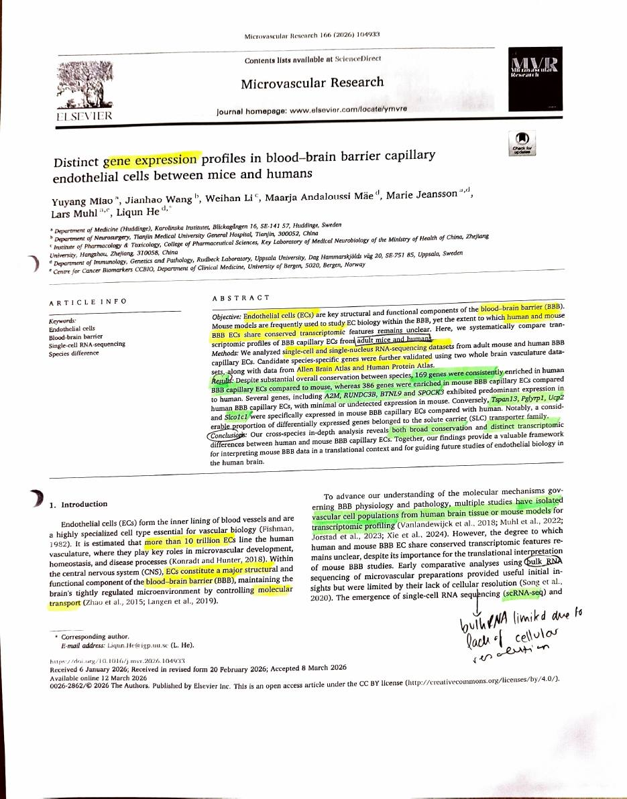
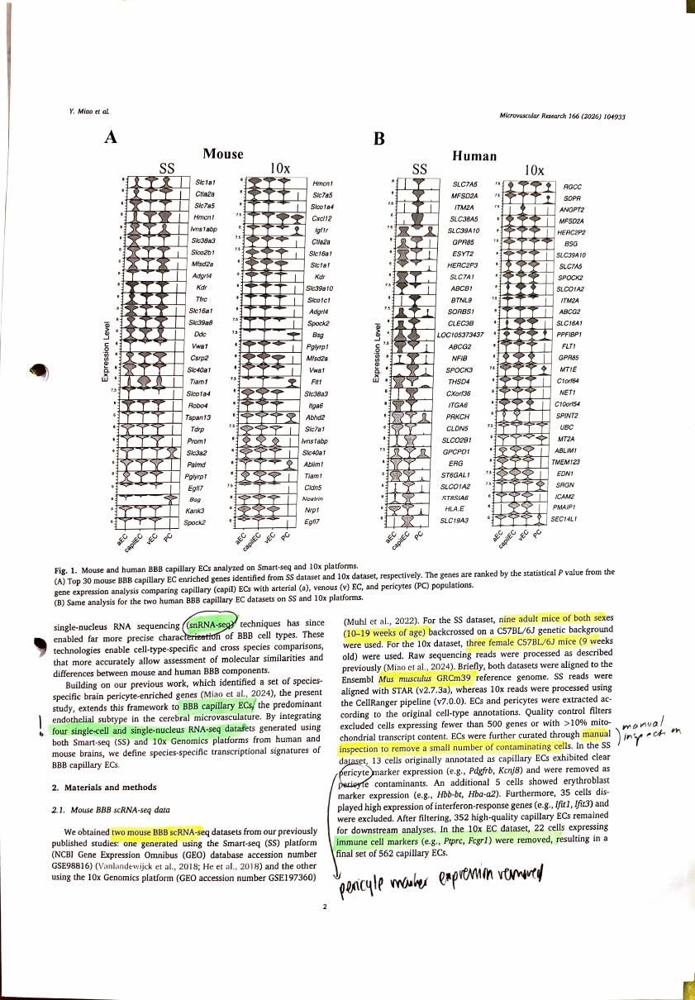
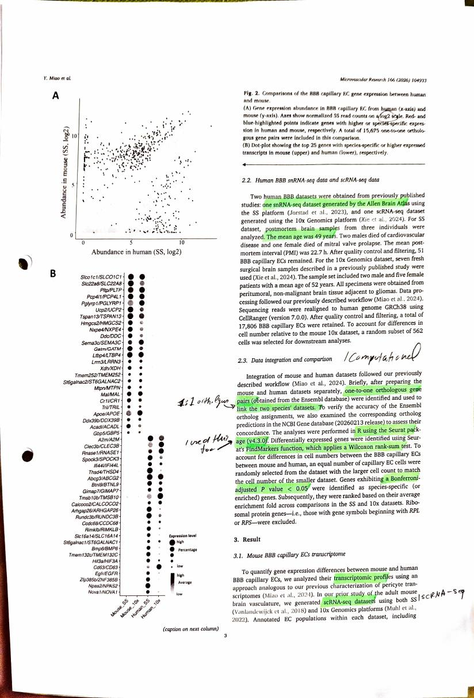
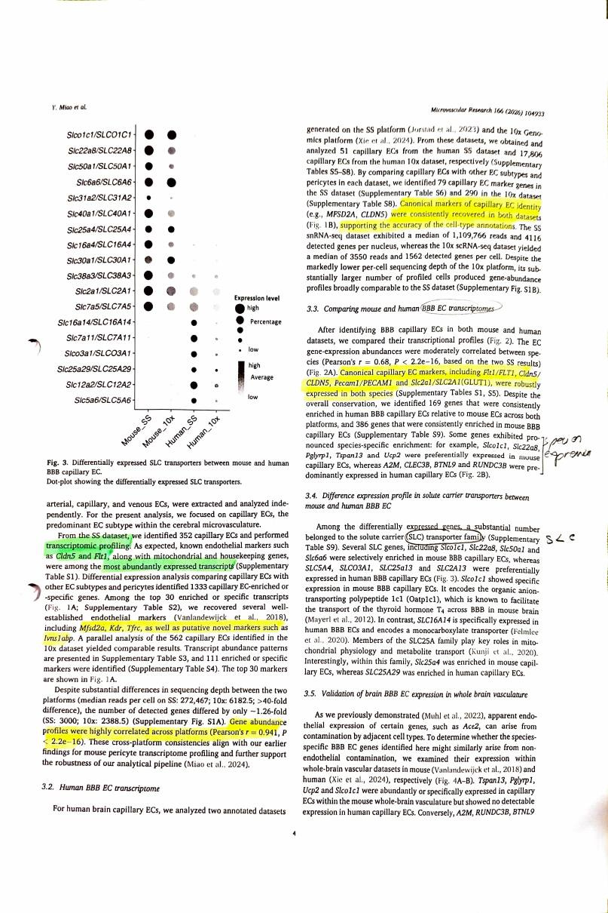
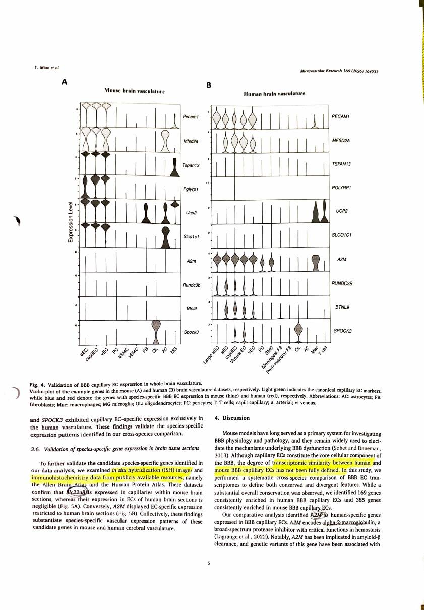
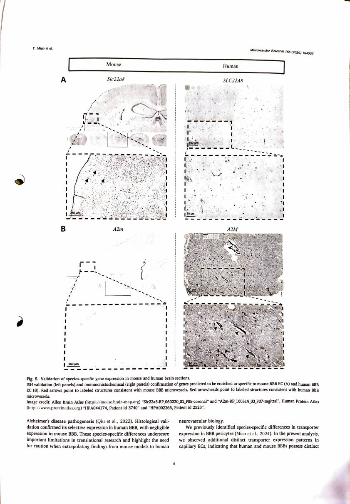
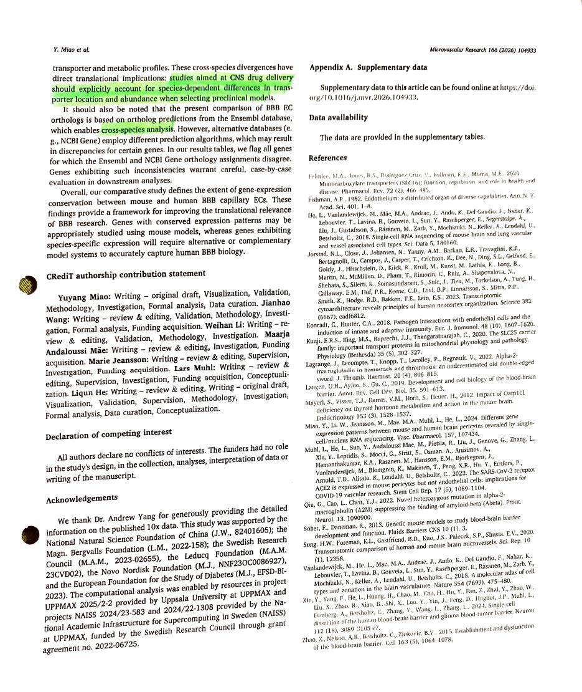

Miao et al. 2026
Distinct gene expression profiles in blood-brain barrier capillary endothelial cells between mice and humans
Miao Y, Wang J, Li W, Mäe MA, Jeansson M, Muhl L, He L (2026). Distinct gene expression profiles in blood-brain barrier capillary endothelial cells between mice and humans. Microvascular Research 166:104933. https://doi.org/10.1016/j.mvr.2026.104933. Open access under CC BY 4.0.
| Field | |
|---|---|
| Year | 2026. Received 6 January, accepted 8 March, online 12 March 2026 |
| Models | Mouse and human, adult, compared directly. Four datasets across two platforms: mouse Smart-seq and 10x from the authors’ own earlier work, human Allen Brain Atlas snRNA-seq and a 10x scRNA-seq dataset |
| Brain region | Not the focus, and the human tissue is mixed. Human Smart-seq is post-mortem brain from three individuals, mean PMI 22.7 h; human 10x is fresh surgical peritumoral tissue adjacent to gliomas. Mouse is whole brain vasculature |
| Measures | RNA. Single-cell and single-nucleus transcriptomes, restricted to capillary endothelial cells specifically |
| Method | scRNA-seq and snRNA-seq on Smart-seq and 10x. Validated against in situ hybridisation and immunohistochemistry from the Allen Brain Atlas and the Human Protein Atlas |
| Cross-species stats | One-to-one orthologous gene pairs only, from Ensembl, cross-checked against NCBI Gene. 15,675 pairs. Seurat FindMarkers with Wilcoxon rank-sum, Bonferroni-adjusted P < 0.05. Cell numbers downsampled so the two species are matched. Ribosomal genes excluded |
My reading
This was a very fitting paper. At the very beginning they just talk about what they are doing, and their objective was to compare the transcriptomic profile of blood brain barrier capillary endothelial cells between adult mice and humans.
What they found is that 169 genes were consistently enriched in human BBB capillary endothelial cells compared to mouse, whereas 386 genes were enriched in mouse compared to human. They have some species specific genes that were expressed in just one or the other.
What they conclude is that there is broad conservation, but that the distinct transcriptomic differences between human and mouse BBB capillary endothelial cells need to be taken seriously. At the very end they also talk about how this is applicable to the drug development process.
Introduction. First they introduce the function of endothelial cells, and how other people have tried to understand the transcriptomic profile. Turns out that bulk RNA is limited due to the lack of cellular resolution. I am not quite sure exactly what they mean here, but maybe it is the missing data. Only with the emergence of single cell RNA sequencing and single nucleus RNA sequencing have they been able to do a much more precise characterisation of barrier cell types.
Materials and methods. Specifically I had to look out for what method they were using: are they referring to single nucleus RNA sequencing or single cell RNA sequencing. These were things I needed to watch for.
They also talk about their manual inspection to remove a small number of contaminating cells. They removed cells with pericyte marker expression, and also immune cell markers.
Then they looked at the human snRNA-seq and scRNA-seq data. They talk about their patient age and so on.
Data integration and comparison is pretty solid, because we did something similar. They used one-to-one orthologous gene pairs. They used R with the Seurat package, which we also used. Then they applied the Wilcoxon rank-sum test, which we also used, and a Bonferroni adjusted p-value, which we also used.
Results. They again talk about having analysed the transcriptomic profile of mouse and human. It turns out that specifically the markers CLDN5 and FLT1 were the most abundantly expressed transcripts. They also look at novel markers such as MFSD2A, KDR and TFRC, and they find the gene abundance profiles were highly correlated across platforms.
Then they look at the human BBB endothelial transcriptome again, and check that the canonical markers of capillary endothelial cells were consistently recovered in both datasets, which makes their case pretty strong.
Then they looked at the mouse and human BBB endothelial transcriptomes together. They checked the markers, saw that both were expressed in both datasets, and that is when they showed the species specific enrichment.
Then they point out that the SLC transporter family was specifically expressed, in that a substantial number of the differentially expressed genes belong to this family.
Then they talk about the validation, which they did using ISH images and immunohistochemistry.
Discussion. They discuss that the transcriptomic profile has some similarities but is not fully defined, and that when you do drug development you need to watch out specifically for the different enriched genes in the BBB capillary endothelial cell profile between mouse and human.
What I take from it
They used the same comparison machinery we did: one-to-one orthologues, Seurat, Wilcoxon, Bonferroni. Seeing our own choices turn up in a 2026 paper in the field is reassuring about the statistics, whatever else is wrong upstream.
Checks against the paper
- On bulk RNA and cellular resolution. Bulk RNA-seq grinds up the whole tissue and measures the average across every cell in it. Brain tissue is overwhelmingly neurons and glia, so the endothelial signal is a small fraction of the total and cannot be separated out. It is not missing data so much as blended data. Single cell and single nucleus methods measure one cell at a time, so capillary endothelial cells can be picked out and compared directly. This is the same problem noted for Wälchli in Kumabe.
- Both methods are used, on both species. Mouse is scRNA-seq on two platforms. Human is one snRNA-seq dataset (Allen Brain Atlas, Smart-seq) and one scRNA-seq dataset (10x).
- The human tissue is worth noting. The post-mortem dataset is three individuals, mean age 49, mean post-mortem interval 22.7 h, yielding only 51 capillary endothelial cells. The surgical dataset is peritumoral tissue adjacent to gliomas from seven patients. Neither is healthy brain in the way the mouse tissue is, which is a real limit on the comparison and one the paper does not dwell on.
- A small internal inconsistency. The abstract and results say 386 genes enriched in mouse; the discussion says 385. Worth knowing which to quote.
- The numbers behind the claim. Cross-platform correlation within mouse was Pearson r = 0.941. Between species the correlation was r = 0.68. 15,675 one-to-one orthologous pairs went into the comparison.
The species-specific genes it names
Higher or specific in mouse: Slco1c1, Slc22a8, Pglyrp1, Tspan13, Ucp2. Slco1c1 encodes Oatp1c1, which carries thyroid hormone T4 across the mouse barrier.
Higher or specific in human: A2M, CLEC3B, BTNL9, SPOCK3, RUNDC3B. A2M is alpha-2-macroglobulin, a protease inhibitor implicated in amyloid-beta clearance.
Conserved and robust in both: FLT1, CLDN5, PECAM1, SLC2A1 (GLUT1), with MFSD2A and CLDN5 consistently recovered as canonical capillary markers.
How it relates to this project
This is the closest paper yet to what the project is doing, and it is two months old. Same two species, same question of how far mouse stands in for human at the barrier, and published while this project was running. The difference is the measurement: they compare expression, this project compares coding sequence. That is a real distinction and it is worth stating in the project’s framing rather than discovering later.
It validates the statistical choices. One-to-one orthologues, Seurat, Wilcoxon rank-sum, Bonferroni adjustment. That is the same framework as
step5eandstep5g. The audit already found the statistics to be the clean part of the pipeline; this is independent confirmation that they match current practice in the field.It settles the one-to-many orthologue question. They restricted to one-to-one orthologous pairs only, 15,675 of them, and cross-checked Ensembl against NCBI. This project admitted 196 one-to-many pairs at 25.8% identity into the BBB set in
step3b, and thenstep5dexcluded them from the control but not from the BBB set. The field standard is to use one-to-one throughout. That is direct support for thestep5dfix.The sharpest finding for this project: the divergent family is the SLC family. A substantial proportion of the differentially expressed genes are solute carriers. This project’s gene list is heavy with SLC transporters, and it is measuring how conserved their sequence is. Miao shows that this is exactly the family whose expression diverges most between mouse and human. So the two measurements may well disagree, with a gene conserved in sequence and expressed quite differently. That is not a problem with either study. It is the most interesting thing either could say, and it is a result this project is positioned to contribute to.
CLDN5 for the fourth time. Here it is one of the two most abundantly expressed transcripts in mouse BBB capillary endothelial cells, and a canonical marker robustly expressed in both species. It is still absent from this project’s gene list because it failed an enrichment cutoff. Four independent papers now treat it as central. This needs writing into the limitations.
It gives a ready-made comparison set. The 169 human-enriched and 386 mouse-enriched genes are a published, thresholded list of where the two species differ at the barrier. Once this project’s conservation scores are corrected, asking whether those divergent genes are also less conserved in sequence is a direct, cheap and genuinely novel question.
Annotated scan
My own printed and annotated pages, scanned back in.







Pages reproduced from Miao et al. 2026, Microvascular Research 166:104933, open access under CC BY 4.0. Handwriting and highlighting are mine. Original paper.